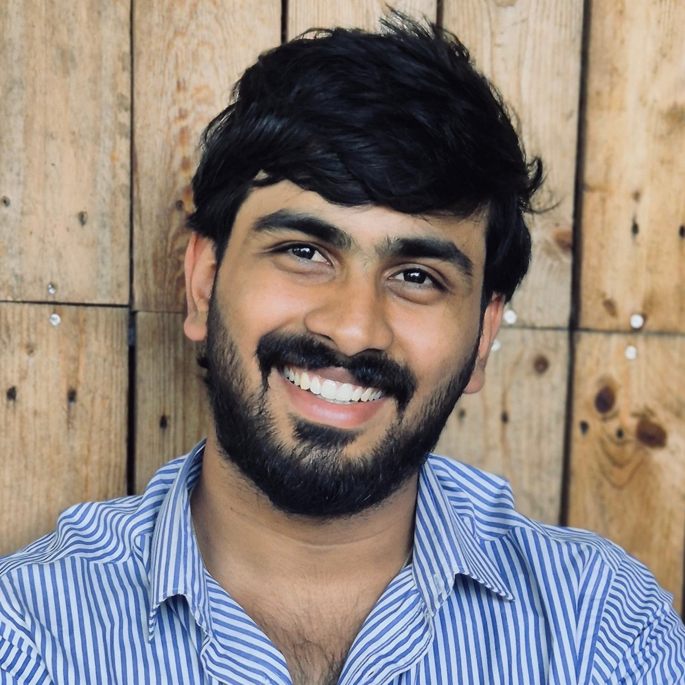

Vamshi R
Backend & Product Engineer
Founder of Seyon · Full-Stack Development · SaaS · AI Engineering. I build products from the ground up, combining backend engineering, product thinking and hands-on execution. Bengaluru-based, with three years of enterprise IoT security work at Nagra Vision.
What I do
I turn ideas into products people can actually use.
I'm a product-minded engineer who enjoys building from the ground up. I work across backend systems, full-stack development, cloud infrastructure and AI, taking ideas from early discussions to working, deployed products.
I don't just focus on writing code. I care about understanding the problem, figuring out what needs to be built, making technical decisions and delivering something that creates real value for users.
I've experienced this firsthand by founding and building Seyon, a SaaS product that is live with paying customers. Alongside that, I've worked on enterprise IoT security systems and explored AI-powered products and agentic workflows.
I enjoy working with small, ambitious teams where engineers take ownership, work closely with founders, solve problems independently and help shape the product as it grows.
Seyon
Service businesses used to take complaints over phone calls with no record. Seyon gives their customers a ticket portal with full history, and gives the business attendance tracking with GPS, signed service reports, AMC checklists and subscription billing.
- Status
- In production with paying customers
- Platform
- Next.js, Node.js, PostgreSQL
- Mobile
- Android app on Google Play
- Website
- seyon.company
Experience
Personal projects
How I build
- Backend
- Java, Node.js (Express), Python (FastAPI)
- Frontend
- Next.js, React, TypeScript
- AI
- LLM integration, RAG, agent orchestration (LangChain, LangGraph)
- Data and infra
- PostgreSQL, Supabase, AWS, CI/CD (GitLab, Jenkins)
Find me
If you're a founder looking for an early engineering team member - someone who can understand what you're building, make technical decisions, write the code and ship the product - I'd like to hear from you.
LinkedIn · GitHub · vamshir2001@gmail.com
Open to conversations with early-stage teams building SaaS, AI products, backend platforms or developer tools.